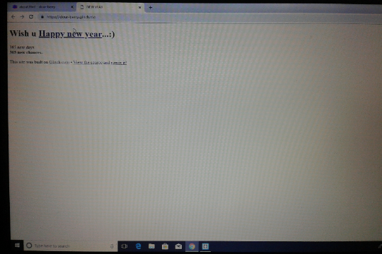
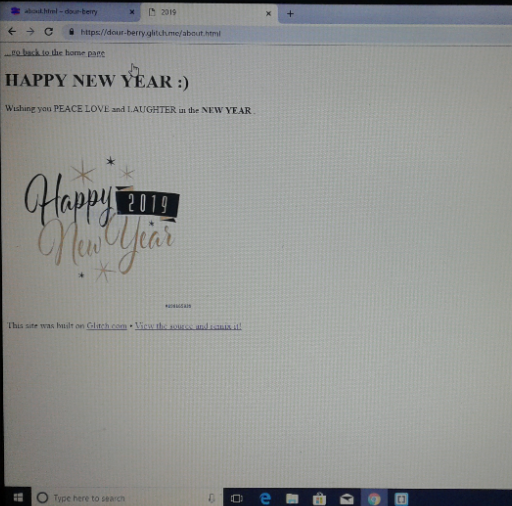

* To create an account in "glitch.com" and select an project that explain our quality of interesting area. Remix the choosen project and make the code .
* REASON : My area of interest is web development and with this project i was able to learn and develop the basics of web development
STEPS:

